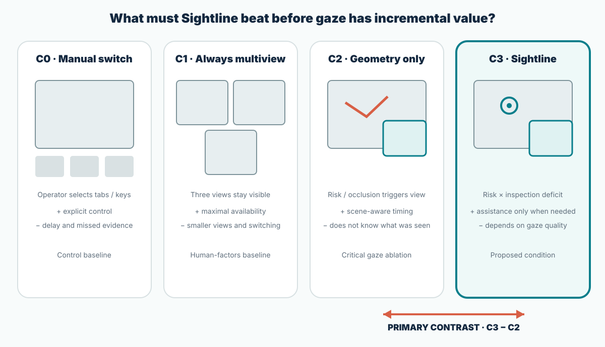
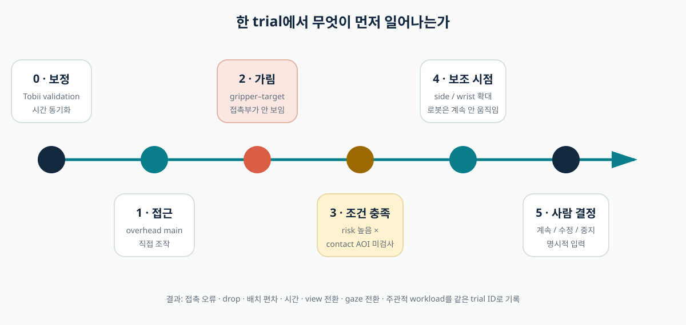
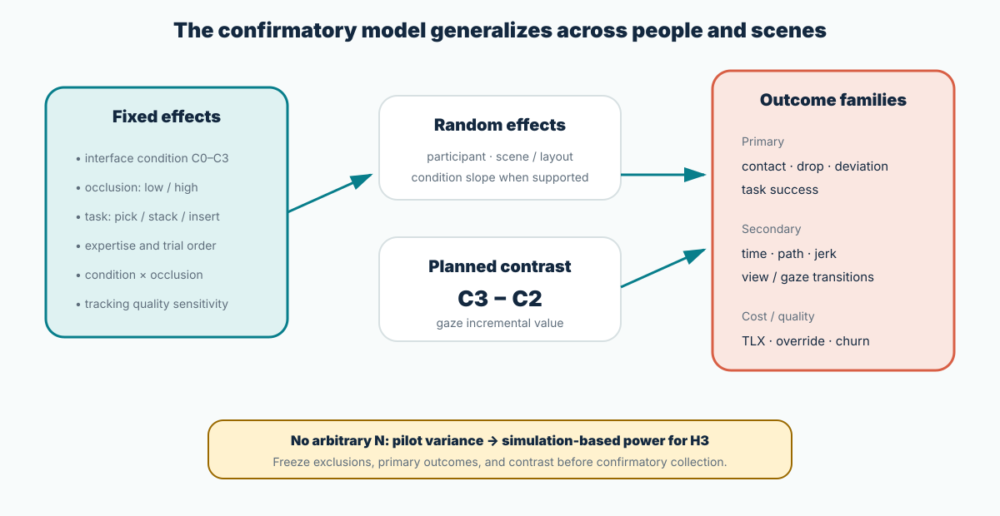

Does selective assistance reduce physical error?
Compare contact, drop, grasp attempts, placement deviation, false continuation, and task success—not completion time alone.
Study protocol · causal comparison
The study compares manual switching, persistent multiview, geometry-triggered assistance, and gaze-plus-geometry assistance within the same participant and physical task family. Performance benefit, visual cost, automation disturbance, and the incremental value of gaze are separated rather than collapsed into one score.
Research questions
The protocol distinguishes task performance from the cost of obtaining visual evidence. It also asks whether any apparent advantage comes from gaze or simply from geometry-based automation.
Compare contact, drop, grasp attempts, placement deviation, false continuation, and task success—not completion time alone.
Measure inter-panel gaze transitions, manual view requests, time to critical evidence, and workload.
The decisive C3−C2 contrast holds risk logic, feed, cue, size, position, and animation constant.
Estimate moderation by occlusion, task phase, experience, gaze quality, and trial order.
H1. Persistent multiview may increase success relative to manual switching, but also increases visual transitions or subjective workload. H2. Geometry-only and Sightline retain the useful information of multiview while reducing transition cost. H3. Sightline reduces false continuation and contact errors relative to geometry-only specifically when a required AOI lacks recent inspection evidence. H4. The C3 benefit is larger under high occlusion and for novices; it may be negligible or disruptive for experts and clear-view trials.
Independent variable
A single fixed view can be used as a technical-pilot negative control, but it is too weak as the principal comparison. The confirmatory study uses the stronger manual and persistent-multiview baselines.

| Condition | Visible layout | Selection policy | What it identifies |
|---|---|---|---|
| C0 · Manual switch | One main feed plus selectable tabs | Operator button press | Cost and omission under explicit control |
| C1 · Always multiview | Overhead, side, and wrist feeds simultaneously | Fixed layout | Maximum availability versus clutter/search cost |
| C2 · Geometry only | Main plus one auxiliary feed | Occlusion, proximity, time-to-contact, phase | Value of adaptive display without gaze |
| C3 · Sightline | Main plus one auxiliary feed | C2 risk × task-critical inspection deficit | Incremental value of valid gaze evidence |
C2 and C3 use the same panel size, position, transition duration, border, minimum on-time, and cooldown.
Every condition allows explicit view selection and robot control. Assistance never removes override.
In C0/C1, C2/C3 trigger variables are logged but not displayed, supporting counterfactual timing audits.
Camera orientation and controller axes do not change across conditions, avoiding a visuomotor-remapping confound.
Physical task battery
A single block transfer risks overfitting the interface to one geometry. The battery separates target occlusion, vertical alignment, and contact-surface precision while retaining low-force, lightweight props.
Select one of visually similar foam blocks, approach, grasp, transport, and release into a bin. The arm or fingers partially cover the target during final approach.
Place one lightweight block on another within a prespecified horizontal tolerance. The overhead feed supports XY alignment but weakly represents z-gap and contact order.
Insert a lightweight peg into a deliberately generous slot. Press-fit, cutting, and high-force insertion are excluded.
| Axis | Low level | High level | Reason |
|---|---|---|---|
| Critical-AOI occlusion | 0–15% hidden | 40–65% hidden | Separates trials where assistance should and should not matter |
| Placement tolerance | Wide bin / slot | Narrow but low-force target | Avoids ceiling while preserving safe props |
| Distractors | 0–1 similar object | 3–4 objects | Varies visual-search demand independently of contact |
| View congruence | Held constant and documented | Prevents frame alignment from masquerading as assistance | |
Trial logic
Post-error surprise gaze cannot justify a pre-error assist. The trial records trigger eligibility, actual cue onset, operator response, and physical outcome on one common timeline.

Store the calibration version and validation error. Recheck at prespecified block intervals and after major posture changes. Do not condition recalibration on performance.
Show the target, destination, controller mapping, and current condition. Move xArm to a scripted home pose and begin from a consistent central fixation cue.
The participant controls xArm. The assigned condition can alter view presentation but never robot motion. The experimenter intervenes only under the safety protocol.
Release, timeout, robot fault, contact criterion, or E-stop closes the trial. Video, gaze, UI, controller, and robot streams share the same episode ID.
Short surprise/control/interference ratings appear on a prespecified subset of trials; NASA-TLX and usability ratings occur at block level to reduce interruption.
Dependent variables
A fast condition that creates more contact is not better. A low-error condition that constantly interrupts the operator may also be unacceptable. No single composite score hides these trade-offs.
| Family | Prespecified measures | Interpretive role |
|---|---|---|
| Physical performance | task success, contact count, drop, grasp attempts, insertion failure, placement deviation, completion time | Primary evidence of task effect |
| Control behavior | TCP path length, jerk, reversal, idle burst, clutch use, E-stop | Whether display events destabilize hand control |
| Visual behavior | critical-AOI coverage, time-to-first-critical-view, inter-panel and inter-AOI transitions, dwell distribution | Whether evidence was acquired and at what cost |
| Automation cost | cue count, camera churn, ignored cue, override, false assist, late assist | Whether adaptation itself becomes a disturbance |
| Subjective experience | NASA-TLX, UMUX-Lite/SUS, surprise, control, preference | Experience and objective performance may diverge |
| Data quality | tracking ratio, validation error, sync residual, dropped frame, AOI audit error | Separates sensing failure from interface failure |
Confirmatory analysis
Repeated trials from the same person and scene are not independent. Mixed-effects models represent the experimental structure and keep the C3−C2 contrast visible.

Limit confirmatory claims to prespecified primary outcomes and contrasts. Report effect estimates and uncertainty, not only p-values. Secondary and exploratory measures are labeled. Analyze all valid randomized trials under the assigned condition, then add transparent sensitivity analyses for quality exclusions.
Classify each cue as useful, ignored, false, late, or disruptive using a preregistered event rule. Examine whether C3 reduces physical errors by presenting evidence earlier, or merely increases caution and completion time.
Pilot and sample size
H3 concerns a within-subject interaction concentrated in high-risk, uninspected trials. A generic “30 participants” rule does not reveal whether the study can identify that effect.
Validate tasks, event detection, stream integrity, safety stops, and trigger timing without using the data for human-effect estimation.
Estimate base error rate, within-person variance, condition correlation, high/low-occlusion separation, tracking quality, and cue disturbance. Pilot participants are excluded from confirmatory analysis or declared in advance.
Use a physically meaningful change in contact or false-continuation probability, not the pilot point estimate alone.
Generate participants, scenes, missing gaze, and repeated trials under plausible parameters. Choose participants and trials per condition for target power on C3−C2.
Lock trigger thresholds, outcomes, contrast, stopping, quality criteria, and analysis code before confirmatory enrollment.
Validity threats
Interface studies are especially vulnerable to learning, novelty, salience, experimenter intervention, and post-hoc threshold tuning.
Use a balanced Latin square, scripted practice, and trial-order terms. Do not place Sightline last for everyone.
C2 and C3 cue rendering must be identical. Otherwise an animation difference, not gaze logic, explains the result.
Measure first-cue surprise and report early versus late block behavior. A short-lived novelty cost may mask or mimic benefit.
Freeze risk and coverage thresholds after pilot. Confirmatory outcomes must not be used to retune the policy.
Script scene layouts and fault handling. Score physical outcomes from condition-masked video with inter-rater checks.
Describe conditions neutrally; do not tell participants that gaze-aware assistance is expected to be superior.
Report who fails calibration and why. Effects restricted to easily tracked participants have limited generality.
Include short washout/practice transitions and test whether participants anticipate cues learned in earlier adaptive blocks.